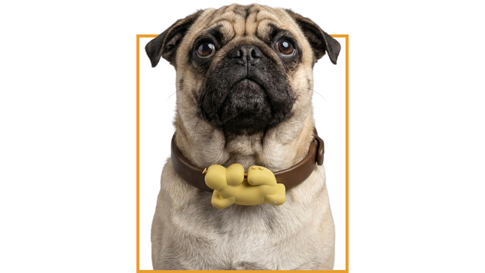

More people are seeking companionship through animals.
Consumer Electronics | 2026
Blōg
To See When You Can’t,
To Act When You Should.
A real-time dog monitoring system that turns everyday signals at home into a clearer view of canine wellbeing.
System
Home IoT
My Focus
CAD Modeling · Manufacturing · Design
